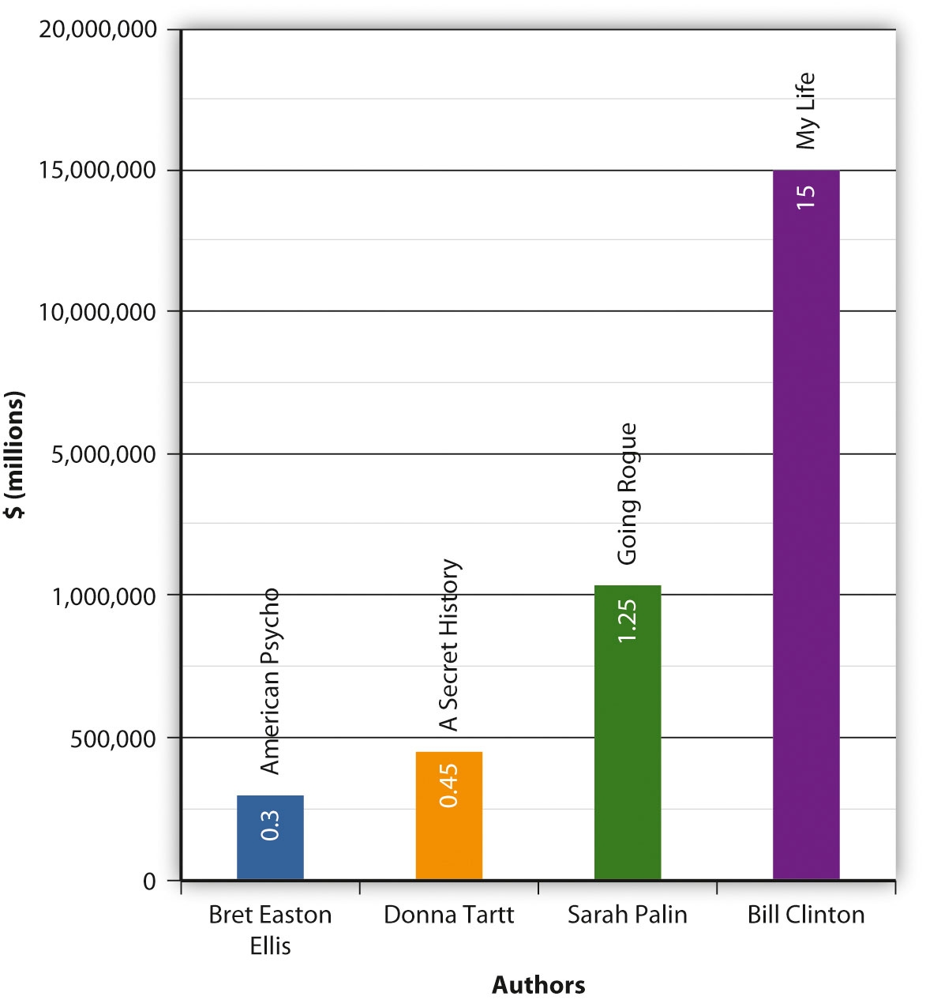

Figure 3.1
In 2004, the National Endowment for the Arts (NEA) released a report that it said represented “a national crisis.” What was under such dire peril that it threatened to “impoverish both cultural and civic life,” as NEA Chairman Dana Gioia put it? Reading—or, more aptly put, not reading. According to the report, Reading at Risk: A Survey of Literary Reading in America, less than half the population engaged in any literary reading in 2002, a record low since the survey’s beginnings in 1982.National Endowment for the Arts, Reading at Risk: A Survey of Literary Reading in America (New York: Author, 2004).
The report, which asked respondents whether they had read any literary fiction (novels, short stories, plays, or poetry) over the past year showed especially stark numbers among the youngest adults. Those aged 18–24 saw a rate of decline 55 percent greater than the total adult population. (Books read for school or work weren’t counted in the survey, which was examining Americans’ leisure reading habits.) According to the NEA, the overall 10 percent drop in literary readers represented a loss of 20 million potential readers, most of them young. In 1982, young adults (people aged 18–34) were most likely to engage in literary reading; by 2002, they were the least likely group. Based on this, the report asks, “Are we losing a generation of readers?”National Endowment for the Arts, Reading at Risk: A Survey of Literary Reading in America (New York: Author, 2004).
Despite these facts, the publishing industry’s releasing more books than ever before. In 2003, just 1 year after the NEA issued its gloomy warning about the state of reading, 175,000 new titles were published in the United States—a 19 percent jump from the year before.Bowker, “U.S. Book Production Soars to 175,000 New Titles in 2003; Trade Up, University Presses Down,” news release, May 27, 2004, http://www.bowker.com/press/bowker/2004_0527_bowker.htm. Since the early part of the 21st century, the United States publishing industry has had an average annual monetary growth rate of 1.1 percent; however, net sales have dropped from $26 billion to $23 billion in the past year.Association of American Publishers, “Industry Statistics 2009: AAP Reports Book Sales Estimated at $23.9 Billion in 2009,” http://www.publishers.org/main/IndustryStats/indStats_02.htm. Meanwhile, as the NEA report notes, 24 percent of Americans’ recreational spending went to electronics, while books accounted for only 5.6 percent in 2002. Perhaps unsurprisingly, the households that watched television more read less. The report warned that “at the current rate of loss, literary reading as a leisure activity will virtually disappear in half a century.”National Endowment for the Arts, Reading at Risk: A Survey of Literary Reading in America (New York: Author, 2004).
As a response to the alarming statistics, in 2006 the NEA launched its Big Read program, essentially a city-wide book club in which community members are encouraged to read the same book at the same time. The NEA provided publicity, funding for kickoff parties, and readers’ guides. The residents of Tampa, Florida, read The Joy Luck Club and were accorded a visit by author Amy Tan, and the residents of Washington, DC, chose Ernest J. Gaines’s A Lesson Before Dying with hopes that it would spur conversations about race, justice, and violence. The Big Read’s DC program director said that he hoped the book got young people talking, noting that the book raises all sorts of relevant questions, such as “Do we offer second chances for people after making mistakes, especially youth in DC? What about youth in the justice system? So many people who have been through the juvenile justice system will testify a book set them free,” he claimed.DeNeen Brown, “Ernest J. Gaines’s ‘Lesson’ Prompts Teens to Grapple With Stark Realities,” Washington Post, May 10, 2010, Arts section.
When the NEA’s 2008 numbers were released, many people were again surprised. The statistics showed that the decline in reading had reversed, the first such increase in 26 years. Once again, the change was most significant among young adults, who had a 21 percent increase from 2002.Motoko Rich, “Fiction Reading Increases for Adults,” New York Times, January 11, 2009, Arts section. The NEA credited the “millions of parents, teachers, librarians, and civic leaders [who] took action… [to ensure that] reading became a higher priority in families, schools, and communities.”Motoko Rich, “Fiction Reading Increases for Adults,” New York Times, January 11, 2009, Arts section. Another factor may have been in play, however; the 2008 study was the first to include online reading. To understand what books mean in the present world of e-readers and digital libraries, it helps to examine how they functioned in the past and to consider how they might change in the future.
Most historians trace the origins of the book back to the ancient Egyptians, whose papyrus scrolls looked very different from the books we’re accustomed to today. From the time they first developed a written script, around 3000 BCE (Before Common Era), Egyptians wrote on many different surfaces, including metal, leather, clay, stone, and bone. Most prominent, though, was the practice of using reed pens to write on papyrus scrolls. In many ways, papyrus was an ideal material for the Egyptians. It was made using the tall reeds that grew plentifully in the Nile Valley. Individual sheets of papyrus were glued or sewn together to make scrolls. A standard scroll was around 30 feet long and 7 to 10 inches wide, while the longest Egyptian scroll ever found stretched over 133 feet, making it almost as long as the Statue of Liberty when it was rolled all the way out.Harry Ransom Center, “The Gutenberg Bible at the Ransom Center,” University of Texas at Austin, http://www.hrc.utexas.edu/educator/modules/gutenberg/books/early/.
By the 6th century BCE, papyrus was the most common writing surface throughout the Mediterranean and was used by the Greeks and Romans. Because papyrus grew in Egypt, the Egyptians had a virtual monopoly over the papyrus trade. Many ancient civilizations housed their scrolls in large libraries, which acted as both repositories of knowledge and displays of political and economic power. The Royal Library of Alexandria boasted around half a million scrolls in its collection; some scholars claim that this was between 30 and 70 percent of all books in existence at the time.Kevin Kelly, “Scan This Book!” New York Times Magazine, May 14, 2006. But other powerful entities in the ancient world were growing tired of the Egyptians’ monopoly over the papyrus trade.
Parchment was made from treated animal skins that were scraped thin to create a flexible, even surface. Parchment had several advantages over papyrus: It was more durable, both sides could be written on, and its trade wasn’t monopolized by the Egyptians. Its spread coincided with another crucial development in the history of the book. Between the 2nd and 4th centuries, the Romans began sewing folded sheets of papyrus or parchment together, and binding them between wooden covers. This form, called the codexA book with pages bound together and enclosed within a cover; the format used for modern books., has essentially the same structure as today’s books. The codex was much more user-friendly than was the papyrus scroll: more portable, easier to store and handle, and less expensive to produce. It also allowed readers to quickly flip between sections. While reading a scroll was a two-handed activity, a codex could be propped open in front of a reader, allowing for note taking. Traditions changed slowly in the ancient world, however, and the scroll remained the dominant form for secular works for several centuries. The codex was the preferred form for early Christian texts, and the spread of Christianity eventually brought about the dominance of the codex; by the 6th century CE, it had almost entirely replaced the scroll.
Figure 3.2

The earliest known printed books were created using woodblock printing.
The next major innovation in the history of books, the use of block printing on paper, began in Tang Dynasty China around 700 CE, though it wouldn’t arrive in Europe for nearly 800 years. The first known examples of text printed on paper are tiny, 2.5-inch-wide scrolls of Buddhist prayers commissioned by Japan’s Empress Shōtoku in 764 CE. The earliest example of a dated, printed book is a Buddhist text called the Diamond Sutra (868 CE). Woodblock printing was a meticulous process that involved carving an entire page of text onto a wooden block, then inking and pressing the block to print a page.
In medieval Europe, however, scribes were still laboriously copying texts by hand. Book culture in the Middle Ages was dominated by monasteries, which became centers of intellectual life. The largest monasteries had rooms called scriptoriaRooms in monasteries where monks copied, decorated, and preserved volumes. where monks copied, decorated, and preserved both religious and secular volumes. Many of the classical texts we have today owe their preservation to diligent medieval monks, who thought of scholarship, even the study of secular and pre–Christian writers, as a way to become closer to God. The hand-copied books produced in the Middle Ages were much more ornate than the mass-produced books of today. These were illuminated manuscriptsA handwritten document in which the text is embellished by decorative additions, including borders and illustrations. that included painted embellishments that were added on to the handwritten books. The word illuminate comes from the Latin illuminare, which means to light up, and some medieval books were literally made to shine through applications of gold or silver decorations. Other ornate additions included illustrations, decorative capital letters, and intricately drawn borders. The degree of embellishment depended on the book’s intended use and the wealth of its owner. Medieval manuscripts were so highly valued that some scribes placed so-called book curses at the front of their manuscripts, warning that anyone who stole or defaced the copy would be cursed. Written in a copy of the Vulgate Bible, for example, is this warning: “Whoever steals this book let him die the death; let be him be frizzled in a pan; may the falling sickness rage within him; may he be broken on the wheel and be hanged.”Virginia Commonwealth University Libraries, “Book Curses,” http://www.library.vcu.edu/preservation/curse.html.
Though illuminated books were highly prized, they were also expensive and labor-intensive to create. By the end of the Middle Ages, the papal library in Avignon, France, held only a few thousand manuscripts compared to the nearly half-million texts found at the Library of Alexandria in ancient times.Steven Roger Fischer, A History of Reading (New York: Reaktion Books, 2004). Bookmaking in the Western world became somewhat less expensive when paper emerged as the primary writing surface. Making paper from rags and other fibers, a technique that originated in 2nd-century China, reached the Islamic world in the 8th century and led to a flowering of book culture there. By the 12th century, Marrakesh, in modern-day Morocco, was said to have had a street lined with a hundred booksellers. But it wasn’t until the 14th century that paper manufacturing began in earnest in Europe.
Papermaking coincided with another crucial step forward in the history of books: Johannes Gutenberg’s invention of mechanical movable typeMethod of printing created by Johannes Gutenberg that uses small, movable letters. in 1448. Though the simple act of crafting small, movable letters may seem mundane in the contemporary world of digital devices and microchips, it is difficult to overstate the importance of Gutenberg’s invention and the effect it had on the world. The Biography Channel and A&E both named Gutenberg as the single most influential person of the second millennium, ahead of Shakespeare, Galileo, and Columbus, and Time magazine cited movable type as the single most important invention of the past 1,000 years. Through his invention, Gutenberg indisputably changed the world.
Much of Gutenberg’s life is shrouded in mystery. It is known that he was a German goldsmith and book printer and that he spent the 1440s collecting investors for a mysterious project. That invention turned out to be the printing press, which combined existing technologies—such as the screw press, which was already used for papermaking—with his own innovation—individual metal letters and punctuation marks that could be independently rearranged—to revolutionize how books were made. Though Gutenberg probably printed other, earlier materials, it was the Bible he printed in 1455 that brought him renown. In his small print shop in his hometown of Mainz, Germany, Gutenberg used his movable type press to print 180 copies of the Bible, 135 on paper and 45 on vellum.Harry Ransom Center, “The Gutenberg Bible at the Ransom Center,” University of Texas at Austin, http://www.hrc.utexas.edu/educator/modules/gutenberg/books/early/. This book, commonly called the Gutenberg Bible, ushered in Europe’s so-called Gutenberg RevolutionThe period of immense cultural and technological change after Johannes Gutenberg’s invention of mechanical movable type. and paved the way for the commercial mass printing of books. In 1978, the Harry Ransom Humanities Research Center of the University of Texas at Austin purchased a complete copy of the Gutenberg Bible for $2.4 million.
Over the next few centuries, the printing press changed nearly everything about how books were made, distributed, and read. Printing books was a vastly swifter system than handwriting books was, and paper was much less expensive to produce than parchment. Before the printing press, books were generally commissioned and then copied. The printing press meant that multiple identical editions of the same book could be printed in a relatively short time, while it probably would’ve taken a scribe at least a year to handwrite the Bible. As Gutenberg’s invention led to more and more printing shops springing up all over Europe, the very idea of what a book looked like began to change. In medieval times, books were the valuable, rare product of hundreds (if not thousands) of hours of work, and no two were the same. After Gutenberg, books could be standardized, plentiful, and relatively cheap to produce and disseminate. Early printed books were made to look like illuminated manuscripts, complete with hand-drawn decorations. However, printers soon realized the economic potential of producing multiple identical copies of one text, and book printing soon became a speculative business, with printers trying to guess how many copies a particular book could sell. By the end of the 15th century, 50 years after Gutenberg’s invention of movable type, printing shops had sprung up throughout Europe, with an estimated 300 in Germany alone. Gutenberg’s invention was a resounding success, and the printing and selling of books boomed. The Harry Ransom Humanities Research Center estimates that before the invention of the printing press, the total number of books in all of Europe was around 30,000. By 1500 CE, the book was thriving as an industrial object, and the number of books in Europe had grown to as many as 10 to 12 million.Bruce Jones, “Manuscripts, Books, and Maps: The Printing Press and a Changing World,” September 5, 2000, http://communication.ucsd.edu/bjones/Books/booktext.html.
The post-Gutenberg world was revolutionized by the advent of the printed book. One thing that did not substantially change, however, was the form of the book itself. Despite minor tweaks and alterations, the ancient form of the codex remained relatively intact. What did rapidly evolve was the way books were produced and distributed and the way information circulated through the world.
Simply put, the mechanical reproduction of books meant that there were more books available at a lower cost, and the growth of international trade allowed these books to have a wider reach. The desire for knowledge among the growing middle class and the new availability of classical texts from ancient Greece and Rome helped fuel the Renaissance, a period of celebration of the individual and of a turn toward humanism. For the first time, texts could be widely dispersed, allowing political, intellectual, religious, and cultural ideas to spread widely. Also for the first time, many people could read the same books and be exposed to the same ideas at the same time, giving rise to mass media and mass culture. Science was revolutionized as well. For example, standardized, widely dispersed texts meant that scientists in Italy were exposed to the theories and discoveries of scientists in England. Because of improved communication, technological and intellectual ideas spread more quickly, enabling scientists from disparate areas to more easily build on the breakthroughs and successes of others.
As the Renaissance progressed, the size of the middle class grew, as did literacy rates. Rather than a few hundred precious volumes housed in monastery or university libraries, books were available to people outside monastic or university settings, which meant that more books were available to women. In effect, the mass production of books helped knowledge become democratized. However, this spread of information didn’t proceed without resistance. Thanks in part to the spread of dissenting ideas, the Roman Catholic Church, the dominant institution of medieval Europe, found its control slipping. In 1487, only a few decades after Gutenberg first printed his Bible, Pope Innocent VIII insisted that all books be prescreened by church authorities before they were allowed to be printed.Jonathon Green and Nicholas J. Karolides, The Enyclopedia of Censorship (Facts on File, 2005), 111. One book the church banned was the Bible printed in any language other than Latin—a language that few people outside of clerical or scholarly circles understood. In 1517, Martin Luther instigated the Protestant Reformation. He challenged the church’s authority by insisting that people had the right to read the Bible in their own language. The church rightly feared the spread of vernacular Bibles; the more people who had access to the text, the less control the church was able to exert over how it was interpreted. Since the church’s interpretation of the Bible dictated in no small part the way many people lived their lives, the church’s sway over the hearts and minds of the faithful was severely undermined by accessible printed Bibles and the wave of Protestantism they encouraged. The Catholic Church’s attempt to control the printing industry proved impossible to maintain, and over the next few centuries, the church would see its power decline significantly, as it was no longer the sole keeper of religious knowledge as it had been throughout the Middle Ages.
The Bible wasn’t the only text that was beginning to be published in languages other than Latin. The Renaissance saw a growing interest in texts published in the vernacularThe native language of a population., the speech of the “common people.” As books became more available to the middle class, people wanted to read books written in their native tongue. Early well-known works in the vernacular included Dante’s Divine Comedy (first printed in Italian in 1472) and Chaucer’s Canterbury Tales (published in Middle English in the 15th century). Genres with popular appeal, such as plays and poetry, became increasingly widespread. In the 16th and 17th centuries, inexpensive chapbooksAn inexpensive, pocket-sized booklet popular from the 16th to 19th centuries, usually containing popular literature such as folk ballads, religious tracts, or children’s stories. (the name derives, appropriately enough, from cheap books) became popular. Chapbooks were small and cheaply printed, and they often included popular ballads, humorous stories, or religious tracts. The proliferation of chapbooks showed just how much the Gutenberg Revolution had transformed the written word. In just a few hundred years, many people had access to reading material, and books would no longer be considered sacred objects.
Because of the high value placed on human knowledge during the Renaissance, libraries flourished during this time period. As they had been in ancient Egypt, libraries were once again a way of displaying national power and wealth. The German State Library in Berlin was founded in 1661, and other European centers soon followed, such as the National Library of Spain in Madrid in 1711 and the British Library (the world’s largest) in London in 1759. Libraries were also associated with universities, clubs, and museums; however, these were often only for subscribers. The United Kingdom’s Public Libraries Act of 1850 fostered the development of free, public lending libraries. After the American Civil War, public libraries flourished in the newly reunified United States, helped by fundraising and lobbying by women’s clubs. Philanthropist Andrew Carnegie helped bring the Renaissance ideals of artistic patronage and democratized knowledge into the 20th century when he helped found more than 1,700 public libraries between 1881 and 1919.Barbara Krasner-Khait, “Survivor: The History of the Library,” History Magazine, October/November 2001.
While Gutenberg’s invention of the printing press ushered in an age of democratized knowledge and incipient mass culture, it also transformed the act of authorship, making writing a potentially profitable enterprise. Before the mass production of books, authorship had few financial rewards (unless a generous patron got involved). As a consequence, pre-Renaissance texts were often collaborative, and many books didn’t even list an author. The earliest concept of the copyright, from the time of the scriptoria, was who had the right to copy a book by hand. The printed book, however, was a speculative commercial enterprise, in that large numbers of identical copies could be sold. The explosive growth of the European printing industry meant that authors could potentially profit from the books they made and then wrote if their legal rights were recognized. In contemporary terms, copyrightThe exclusive rights given to a work’s creator or author, which include the right to copy, distribute, and adapt the work. allows a person the right to exclude others from copying, distributing, and selling a work. This is a right usually given to the creator, although that right can be sold or otherwise transferred. Works not covered by copyright or for which the copyright has expired are part of the public domainWorks not covered by intellectual property law or for which copyright protection has expired. Works in the public domain are essentially public property., which means that they are essentially public property and can be used freely by anyone without permission or royalty payments.
The origins of contemporary copyright law are usually traced back to the Statute of Queen Anne. This law, enacted in England in 1710, was the first to recognize the legal rights of authors, though in an incomplete manner. It granted a book’s publisher 14 years of exclusive rights and legal protection, renewable for another 14-year term if the author was still living. Anyone who infringed on a copyrighted work paid a fine, half of which went to the author and half to the government. Early copyright was intended to limit monopoly and censorship, to provide a sense of stability to authors, and to promote learning by ensuring that documents would be widely accessible.
The United States established its first copyright law not long after the Declaration of Independence. The U.S. Constitution granted Congress the power “to promote the progress of science and useful arts, by securing for limited times to authors and inventors the exclusive right to their respective writings and discoveries” in Article I, Section 8, Clause 8. The first federal copyright law, the Copyright Law of 1790, was modeled on the Statute of Queen Anne and it similarly granted exclusive rights for 14 years, renewable for 14 more if the author was living at the end of the first term.
The “limited times” mentioned in the Constitution have steadily lengthened since the 18th century. The Copyright Act of 1909 allowed for an initial 28-year term of copyright, which was renewable for one additional 28-year term. The Copyright Act of 1976, which preempted the 1909 act, extended copyright protection to “a term consisting of the life of the author and 50 years after the author’s death,” was substantially longer than the original law’s potential 56-year term. In 1998, copyright was extended even further, to 70 years after the author’s death. The 1998 law, called the Copyright Term Extension Act, also added a 20-year extension to all currently copyrighted works. This automatic extension meant that no new works would enter the public domain until 2019 at the earliest. Critics of the Copyright Term Extension Act called it the Mickey Mouse Protection Act because the Walt Disney Company lobbied for the law.Louise Krasniewicz, Walt Disney: A Biography (Santa Barbara, CA: Greenwood, 2010), 43. Because of the 20-year copyright extension, Mickey Mouse and other Disney characters remained out of the public domain, which meant that they were still the exclusive property of Disney.
The 1976 law also codified the terms of fair useAn aspect of copyright law that specifies the ways in which a work (or parts of a work) under copyright can legally be used by someone other than the copyright holder. for the first time. Fair-use law specifies the ways in which a work (or parts of a work) under copyright could legally be used by someone other than the copyright holder for “purposes such as criticism, comment, news reporting, teaching (including multiple copies for classroom use), scholarship, or research, is not an infringement of copyright.” That is, a book review quoting snippets of a book, or a researcher citing someone else’s work is not infringing on copyright. Given an Internet culture that thrives on remixes, linking, and other creative uses of source material, the boundaries of the legal definition of fair use have met with many challenges in recent years.
With the exception of self-published works, the author isn’t the person in charge of producing the book or sending it out into the world. These days, the tasks of editing, designing, printing, promoting, and distributing a book generally fall to the book’s publisher. Although authors are usually the ones with their names prominently displayed on the spine, a published book is actually the product of many different kinds of labor by many different people.
Early book printers acted as publishers, because they produced pages and sold them commercially. In England, the Stationer’s Company, which was essentially a printer’s guild, had a monopoly over the printing industry and was also allowed to censor texts. The Statute of Queen Anne, the 1710 copyright law, came about partially as a result of some of these early publishers overstepping their bounds.
In the 19th-century United States, publishers fulfilled many roles, and it was not uncommon for one company to print, wholesale, and even retail their own books. Although bookstores and printers existed in the United States, the Northeast emerged as the nation’s publishing epicenter, with hotspots in Philadelphia, New York, and Boston. During the 1800s, the U.S. book industry swiftly expanded. In 1820, the books manufactured and sold in the United States totaled about $2.5 million; by 1850, even though the price of books had dropped substantially, sales figures had quintupled.Daniel Walker Howe, What Hath God Wrought: The Transformation of America, 1815–1848 (New York: Oxford University Press, 2007). Technological advances in the 19th century, including machine-made paper and the Linotype typesetting machine, made book publishing simpler and more profitable. Many of today’s large publishing companies were created in the 19th century; for example, Houghton Mifflin originated in 1832; Little, Brown and Company formed in 1837; and Macmillan was founded in Scotland in 1843 and opened its U.S. branch in 1869. By the turn of the century, New York was the center of publishing in the United States.
The rapid growth of the publishing industry and evolving intellectual property laws meant that authors could make money from their writing during this period. Perhaps it’s no suprise, then, to learn that the first literary agents also emerged in the late 19th century. Literary agents act as intermediaries between the author and the publisher, negotiating contracts and parsing difficult legal language. The world’s first literary agent, A.P. Watt, worked in London in 1881 and essentially defined the role of the contemporary literary agent—he got paid to negotiate on behalf of the author. A former advertising agent, Watt decided to charge based on commission, meaning that he would take in a set percentage of his clients’ earnings. Watt set the fee as 10 percent, which is still considered standard today.
The biggest change to hit publishing in the first half of the 20th century was the increasing popularity of the paperback book. Books covered in less expensive, less durable paper existed since Renaissance chapbooks were invented, but they were usually crudely printed works that were meant only as passing entertainment. In 1935, the publishing industry was changed forever when Penguin Books Ltd., a paperback publisher, launched in England, ushered in the so-called paperback revolution. Instead of being crude and cheaply made, Penguin titles were simple but well designed. Though Penguin sold paperbacks for only 25 cents, it concentrated on providing works of literary merit, thus fundamentally changing the idea of what quality books should look like. Some early Penguin titles included Ernest Hemingway’s A Farewell to Arms and Dashiell Hammett’s The Thin Man. In the decades that followed, more and more paperback publishing companies were launched by people hoping to capitalize on Penguin’s success. The first U.S.-based paperback company was Pocket Books, founded in 1939. By 1960, paperbacks were outselling hardbacks in the United States.Matthew Ogle, “The Paperback Revolution,” CRC Studio, 2003, http://www.crcstudio.org/paperbacks/revolution.php.
The second half of the 20th century was marked by the consolidation of the U.S. book-publishing industry and by a larger trend toward media consolidation. Between 1960 and 1989, about 578 mergers and acquisitions occurred in the U.S. book industry; between 1990 and 1995, 300 occurred; and between 1996 and 2000, nearly 380 occurred.Albert N. Greco, The Book Publishing Industry (New York: Routledge, 2005). This was just a part of the larger international trend toward mass media consolidation, where large international media empires acquired smaller companies in many different industries. For example, the German media company Bertelsmann AG had aquired Bantam Books, Doubleday, and Random House; London-based Pearson owned Viking, Penguin, Putnam, and the Dutton Group; and AOL Time Warner owned Little, Brown and Company and Warner Books. Because publicly traded companies have obligations to their shareholders, the publishing industry found itself pressured to turn increasingly high profits. By 2010, roughly 60 percent of all books sold in the United States were published by six large publishing houses, often referred to as the Big SixThe biggest North American trade publishing houses, including Hachette Book Group, HarperCollins, Macmillan, Penguin Group, Random House, and Simon & Schuster. (see Figure 3.3).Michael Hyatt, “Top Ten U.S. Book Publishers for 2009,” January 15, 2010, http://michaelhyatt.com/2010/01/top-ten-u-s-book-publishers-for-2009.html. In the first years of the third millennium, book publishing was an increasingly centralized, profit-driven industry.
Figure 3.3

The Big Six control more than 60 percent of the book market.Michael Hyatt, “Top Ten U.S. Book Publishers for 2009,” January 15, 2010, http://michaelhyatt.com/2010/01/top-ten-u-s-book-publishers-for-2009.html.
Questions about the exact extent of fair use of copyrighted materials have been especially relevant in recent years because of the popularity of using and manipulating copyrighted materials on the Internet. Go on a website with user-uploaded content (such as YouTube or Wikipedia) and find examples of works that use copyrighted content in a way that you think is justified under fair use. Then, find examples of works that you think do not use copyrighted content in a way permitted by fair use. Answer the following questions when you have completed your research:
Figure 3.4

Common Sense, a pamphlet published anonymously in 1776, argued for the American colonies’ independence from Britain.
At the turn of the 18th century, the American colonies could only claim about 250 published books.Nina Baym, introduction to The Norton Anthology of American Literature (New York: W. W. Norton & Company, 2007) A:1–14. In 2010 alone, more than 288,000 new titles were published. As the United States has grown and developed, books have grown and developed along with it. Sometimes books have amplified differences within the nation, sometimes their authors have worked to proclaim a distinctive American style; sometimes the author has tried to expose hypocrisies in government and society, and sometimes the author has celebrated America’s multifaceted population. Throughout the history of the United States, books have influenced American popular culture and have been influenced by it as well.
In the years leading up to the American Revolution, newspapers and pamphlets were the publication method of choice because they could be quickly printed and were ideal for circulating short political and news items at a moment of rapid change. Thomas Paine’s Common Sense, first published anonymously in 1776, could be considered America’s first bestseller. As literacy rates soared in post-independence America and the nation became more stable, the market for longer books increased. William Hill Brown’s The Power of Sympathy: or, The Triumph of Nature, published in 1789, is considered the first American novel. Brown’s epistolary novelA book made up of letters of correspondence., which is a novel made up of letters of correspondence, warned about the dangers of seduction. Brown’s novel shares some features with a novel published 2 years later, Charlotte Temple by Susannah Rowson, another cautionary tale about a woman falling prey to seduction.
Though women were often the subjects of popular novels, they were increasingly the audience as well. Eighteenth-century Americans were influenced by Enlightenment values, which maintained that a strong nation needed an educated, moral population. Although the public realm of education, employment, and politics was dominated by men, women had control over the domestic sphere and the education of the next generation. The 18th-century idea that American women should educate their children for the good of the emerging nation, sometimes called republican motherhood, helped to legitimize, expand, and improve women’s education. Women’s literacy rates rose sharply during this period, and more and more books were tailored to women’s interests, as women tended to have more leisure time for reading. Authors such as Frances Burney and Mary Wollstonecraft wrote about issues facing women of the period and openly criticized the fixed role of females in society.
However, in these early years of the American novel, some people found the form potentially dangerous and subversive because it was too entertaining and it appealed to people’s, especially women’s, imaginations. A character in The Boarding School by Hannah Webster Foster, a popular writer of the time period, espouses this particular viewpoint:
Novels, are the favorite and the most dangerous kind of reading, now adopted by the generality of young ladies…. Their romantic pictures of love, beauty, and magnificence, fill the imagination with ideas which lead to impure desires, a vanity of exterior charms, and a fondness for show and dissipation, by no means consistent with that simplicity, modesty, and chastity, which should be the constant inmates of the female breast.Hannah Webster Foster, The Boarding School; or, Lessons of a Preceptress to Her Pupils (1829; repr., Whitefish, MT: Kessinger Publishing, 2010).
Part of the perceived threat of novels was their widespread popularity with many different kinds of people. An early biography of Susannah Rowson characterized the wide readership of her novel:
It has stolen its way alike into the study of the divine and into the workshop of the mechanic, into the parlor of the accomplished lady and the bed-chamber of her waiting maid, into the log-hut on the extreme border of modern civilization and into the forecastle of the whale ship on the lonely ocean. It has been read by the grey bearded professor after his ‘divine Plato’; by the beardless clerk after balancing his accounts at night, by the traveler waiting for the next conveyance at the village inn; by the school girl stealthfully in her seat at school.Robert Darnton, The Kiss of Lamourette: Reflections in Cultural History (New York: W. W. Norton & Company, 1996).
These popular 18th-century novels were preoccupied with providing moral guidance and cautionary tales to the citizens of the newly formed United States. Questions of freedom and responsibility were paramount as the emerging nation attempted to establish a uniquely American literature.
Rowson’s Charlotte Temple became the most popular book in the 1800s until Uncle Tom’s Cabin was published.Michael Winship, “Two Early American Bestsellers,” Common-place 9, no. 3 (2009), http://www.common-place.org/vol-09/no-03/winship/. Written by abolitionist and preacher Harriet Beecher Stowe in 1852—9 years before the beginning of the Civil War—Uncle Tom’s Cabin was a smash hit by any definition. An impassioned critique of slavery that tugged on readers’ emotions, the novel sold 300,000 copies in its first year and became the century’s second-best-selling book after the Bible.Africans in America Resource Bank, “Slave Narratives and Uncle Tom’s Cabin, 1845–1862,” PBS, http://www.pbs.org/wgbh/aia/part4/4p2958.html. Stowe’s novel has been credited with heightening tensions between the North and the South. The novel was not only popular domestically. The first London edition sold 200,000 copies in a year, and the book was the first American novel to be translated into Chinese.Africans in America Resource Bank, “Slave Narratives and Uncle Tom’s Cabin, 1845–1862,” PBS, http://www.pbs.org/wgbh/aia/part4/4p2958.html. The absence of international copyright law meant that Stowe was not compensated for most of these translations. Many unauthorized stage versions of the play were produced as well, causing historians to theorize that more people saw theatrical adaptations of the play than read the book. As with today’s stage and film adaptations of books, some of these versions of Stowe’s story were faithful to the novel, while others changed the story’s ending or even twisted the story to make it pro-slavery. In the early 1900s, 9 silent film versions of the novel were released, making Uncle Tom’s Cabin the most-filmed story of the silent film era. With her book, Stowe helped establish the political novel as an important touchstone of American literature.
Figure 3.5

Before strict copyright law, many different versions of Stowe’s novel cropped up.
Other 19th-century writers in the United States concentrated on developing a uniquely American style, a mode of self-expression distinct from European models. James Fenimore Cooper, author of The Last of the Mohicans (1826), wrote adventure stories that celebrated the American frontier, championing a theme that would intrigue U.S. writers for centuries to come. Poet Walt Whitman wrote Leaves of Grass (1855), a collection of poems that shocked readers with its frank sexuality and fresh use of language. In contrast to most other English-language poets at the time, Whitman wrote in free verse, mimicking the rhythms of actual speech in his poems. He was purposefully informal; he valued everyday speech; he spoke openly about sexual themes; and he was an important figure in establishing an American idiom that was open, informal, and focused on the experiences of common people. Washington Irving, author of the now-iconic short stories “Rip Van Winkle” (1819) and “The Legend of Sleepy Hollow” (1820), helped establish satire and wit as important aspects of the emerging American style.
Mark Twain famously used humor in his many works of journalism, travel writing, and fiction. Twain’s characters’ voices are funny, irreverant, and full of off-the-wall idioms and odd regional coinages. This passage, from the first chapter of The Adventures of Huckleberry Finn (1884), shows Twain’s use of distinctively American speech patterns: “The Widow Douglas she took me for her son, and allowed she would sivilize me; but it was rough living in the house all the time, considering how dismal regular and decent the widow was in all her ways; and so when I couldn’t stand it no longer I lit out.”Mark Twain, The Adventures of Huckleberry Finn (1885; repr., New York: Harper & Brothers, 1912). Twain was also one of the first writers to use a then-newfangled invention—the typewriter.
Edgar Allan Poe is best known for writing macabre stories and poems like “The Raven” (1845), “The Cask of Amontillado” (1846), and “The Tell-Tale Heart” (1843). A master of the Gothic genre, Poe is also credited with writing the first detective story, 1841’s “The Murders in the Rue Morgue.” (Some people also credit Poe with the invention of the horror story and the science fiction story.) In this and other stories, Poe established many of the classic features of detective stories, including Arthur Conan Doyle’s Sherlock Holmes tales: a brilliant, crime-solving detective who works outside the standard police system; the detective’s assistant or friend, who serves as narrator; and an emphasis on analysis and solving a crime through reason. Poe had such a strong effect on the mystery genre that the Mystery Writers of America annually give out the Edgar Awards, named in honor of Poe.
At the end of the 1800s, American literature could be broadly categorized as reflecting an interest in the natural landscape, preoccupation with questions of identity (both of the individual and the nation), an interest in humor or satire, a pride in common speech, and an interest in politics. An emerging interest in what we now call genre fiction was increasing and would become a fully fledged movement as the 20th century progressed.
The production of books in the 1900s was cheaper than ever because of improved technology. The 20th century saw a multiplicity of genres that began to better reflect the diversity of experiences and interests in the United States. Furthermore, the paperback revolution eroded the distinction between high and low art. By the end of the century, however, books were facing competition for attention with films, television, video games, and the Internet.
In 1900, L. Frank Baum published The Wonderful Wizard of Oz, a novel set in the fantastical world of Oz. It became the best-selling children’s book for the next 2 years and went on to spawn 13 sequels. Baum’s book is considered part of the so-called golden age of children’s literature, which is considered to have begun with Lewis Carroll’s Adventures of Alice in Wonderland (1865) and ended with A. A. Milne’s Winnie-the-Pooh books (1924–1928). Along with children’s literature, other kinds of genre fictionWorks that are intended to fit into a known genre or category, such as western, romance, mystery, or science fiction. saw their birth or growth in the 20th century. Owen Wister’s The Virginian (1902) and Zane Grey’s Riders of the Purple Sage (1912) established the Western as a uniquely American genre that would influence the popular Wild West films of the 1920s and beyond. Other genres including science fiction, horror, mystery, and romance sprung up out of the late-19th and early-20th dime novels, named for their cheap cost and known for their sensational, quickly written stories. The dime novel gave way to the even-cheaper pulp magazines and books, inexpensive publications named for the cheap pulp paper they were printed on. Pulp storiesSensationalistic stories from books and magazines that were named for the cheap, wood-pulp paper they were printed on. were generally sensational and featured sordid tales of murder, prostitution, and gangster violence; others told fantastical stories of aliens or monsters. The pulps were gleefully low culture and were quite popular with readers. Conan the Barbarian, Tarzan, Zorro, and The Shadow all made their first appearances as characters in early pulps. The paperback revolution of the 1930s, 1940s, and 1950s gave genre stories a wider reach in a more durable format.
Figure 3.6

L. Frank Baum’s The Wonderful Wizard of Oz was the basis for the famous 1939 movie The Wizard of Oz.
Figure 3.7
Pulp publications captured readers with their lurid, colorful covers.
While many 19th-century U.S. writers worked to create a distinctive American style, some 20th-century writers aimed to debunk American myths. After World War II, the United States emerged as a dominant world power. Some writers became preoccupied with critiquing American society and government. Dissatisfied with the widespread 1950s ideals of conformity and homogeneity, Beat GenerationThe name given to a group of American writers who came to prominence in the 1950s and who were known for literary experimentation and nonconformity. authors wrote in a freewheeling, informal style and proudly described their drug use and sexual exploits. Touchstone works of the Beat Generation include Allen Ginsberg’s Howl and Other Poems (1956), Jack Kerouac’s On the Road (1957), and William S. Burroughs’s Naked Lunch (1959). These books celebrated road trips, drug trips, spritual yearning, distrust of the mass media, and gleeful obscenity, and they helped pave the way for the hippie movement of the 1960s.
After the end of the Cold War in 1991, American literature saw an upswing in books that expressed the diversity of voices and experiences of late-20th-century America. Jhumpa Lahiri and Amy Tan wrote about the immigrant experience; Sherman Alexie and Louise Erdrich penned acclaimed novels about Native American life; and Toni Morrison explored the political and historical dimensions of slavery and race in the United States. Sometimes called multicultural literatureWorks that promoted cross-cultural understanding by examining different value systems, histories, traditions, and speech patterns of people in America., these and other books were celebrated as a way to promote cross-cultural understanding by examining the different value systems, histories, traditions, and speech patterns of people in America.
The 21st-century market has so far been dominated by several massively popular novel franchisesA series of books with recurring characters and high marketability.—such as Left Behind, Harry Potter, The Twilight Saga, and The Da Vinci Code—that have collectively sold hundreds of millions of copies. These haven’t only been popular as books; they’ve also spawned equally lucrative films and merchandise tie-ins. Consumers who are so inclined can purchase Twilight Saga wall decals, Harry Potter earrings, or Da Vinci Code board games. In some ways, such novel franchises harken back to Uncle Tom’s Cabin in the 19th century, which was a multiplatform success popular on the page, stage, and screen.
Figure 3.8
“Howl” marked a turning point in United States obscenity laws.
Allen Ginsberg’s poem “Howl” met with strong reactions, both positive and negative, when it was released by City Lights Books in 1956. Ginsberg’s poem was instantly notorious for its descriptions of sexual acts, both heterosexual and homosexual, drug use, mental hospitals, and antiestablishment conspiracies. Many readers were shocked by Ginsberg’s words; however, that was precisely his intent. He once described “Howl” as “an emotional time bomb that would continue exploding in U.S. consciousness in case our military-industrial-nationalist complex solidified.”Allen Ginsberg, Howl, ed. Miles Barry, (New York: Harper Perennial, 1995). In 1957, U.S. customs officials seized a shipment of copies of the book on the grounds of obscenity, but soon after dropped their charges. However, the poem’s legal struggles weren’t over; that same year, the California police sent plainclothes officers to City Lights Bookstore to buy a copy and then promptly arrested the salesclerk and the store owner on charges of obscenity.
The “Howl” trial came in the same year as several other landmark Supreme Court cases that liberalized the legal definition of obscenity in the United States. Before 1957, a more strict definition held that any material with a possible immoral influence was obscene. This stance led to a ban on works by authors such as James Joyce and D. H. Lawrence. Under the new law, a work would be judged by “community standards” and could only be judged obscene if its “dominant theme taken as a whole appeals to the prurient interest.” In other words, books could no longer be deemed obscene on the basis of a single four-letter word. It also meant that the poem’s obscenity would have to be judged against the relatively liberal standards of San Francisco, where the police sting operation had taken place.
The ACLU leapt to City Lights’ defense, and the presiding judge overturned the obscenity charge, citing the poem’s “redeeming social importance.” In hindsight, the judge seems undoubtedly correct about the poem’s social importance. “Howl” and the obscenity rulings of 1957 marked a crucial bridge between the post–World War II years of enthusiastic patriotism and social conformity and the 1960s ethos of free love and antigovernment sentiment. By the time of Ginsberg’s death in 1997, Howl and Other Poems had sold more than 800,000 copies.Johan Raskin, American Scream: Allen Ginsberg’s “Howl” and the Making of the Beat Generation (Berkeley: University of California Press, 2006).
Consider a novel or book from any era in U.S. history that has made an impression on you. Research this book on the Internet to discover how it played a part in shaping U.S. popular culture, how culture shaped the book in question, or both. Then, answer the following questions:
From ancient Egyptian papyrus scrolls to scrollable 21st-century e-books, a book can come in many different formats. However, in some ways, it seems like the more things change, the more they stay the same. In the same way that early printed books were painstakingly illuminated to look more like medieval books, today’s e-books use e-paper technology to mimic the look of a printed page. Even the hardcover books we’re familiar with today are direct descendants of the ancient codex.
While the first codices enclosed bound papers between wooden covers (the word codex means block of wood in Latin), contemporary hardcover book covers are usually made of cardboard sheathed in cloth, paper, or leather. The printed pages of the book are either sewn or glued to the cover. Until the early 1800s, most books were sold unbound. A buyer would purchase a sheath of printed papers that would be bound either by the bookseller or by a commissioned bindery. British publisher William Pickering is considered the first publisher to issue books in uniform cloth bindings in 1820. About a decade later, dust jackets, the detachable outer covers that sheathe most hardback books today, arrived on the scene. Dust jackets were initially meant only as a protective covering for the binding, but soon they became a place where designers could create a colorful and distinctive cover for a book.
Figure 3.9

Original dust jackets are especially important for book collectors—a first edition of F. Scott Fitzgerald’s The Great Gatsby without the dust jacket sells for around $3000; with the dust jacket intact, it can go for more than $30,000.
The durability of hardcover books makes them attractive to both authors and book purchasers. However, the competitive economics of today’s publishing industry means that some books are never issued in hardcover. Because hardcover books are more expensive to produce and almost always cost more than their paperback equivalents, publishers tend to reserve the format for books that they expect will sell well.
Based on projected sales, publishers must decide how big of a print run to order for a new hardcover book. A book’s print runAll the copies of a book created in one setup of the printing apparatus. refers to all the copies made in one setup of the printing apparatus. A failed book may only have one, while a successful book may have 50 or more printings. Figuring out how many copies of a book to print is an inexact science, as publishers must essentially guess how well a book will sell. There is no standard size for a print run. The U.K. edition of the first Harry Potter book had an initial print run of only 500 copies; the U.S. print run of the seventh and final book in the series was a record-breaking 12 million. When an initial print run is sold out, the book is either reprinted (these copies are considered a second printing) or is considered out of print. The contemporary publishing industry will often issue a first-run hardcover printing, followed by subsequent paperback editions.
Inexpensive paper-bound books have been around for centuries in formats like the chapbook, the British penny dreadful, and the American dime novel. However, the hardcover book, whether as an ancient codex or its contemporary equivalent, was the dominant format in the book world for thousands of years. The introduction of a new format in the 1930s, the paperback, was considered revolutionary. The so-called paperback revolution began during the Great Depression, when paperbacks were marketed as inexpensive alternatives to hardcover editions. Penguin Books, Ltd., the first majorly successful paperback publishing company, kept prices low by ordering large print runs and selling books in nontraditional retailers, such as Woolworth’s drugstores. Penguin also broke the traditional paperback mold by avoiding pulp fiction entertainment novels and instead printing books that were both cheap and intellectually stimulating. Donald Porter Geddes, the editor of Pocket Books, the first paperback publishing house in the United States, spelled out this new approach to bookselling in 1944: “The best books apparently have the greatest appeal to the greatest number of people … the larger American public need no longer suffer from the delusion that it is intellectually inferior, or, from a literary point of view, lacking in any aspect in good taste, judgment, and appetite.”Matthew Ogle, “The Paperback Revolution,” CRC Studio, 2003, http://www.crcstudio.org/paperbacks/revolution.php. By 1960, when paperback books first outsold hardcovers, these early paperback innovators were proved right.
While paperback publishing first issued only reprints of books that had already been issued in hardcover, paperback originalsA book with an initial print run in paperback instead of hardcover., books that had their initial print run as a paperback edition, emerged in the 1950s. Paperback originals were another step in helping to remove the stigma from the paperback book. In 1999, Jhumpa Lahiri’s The Interpreter of Maladies was the first paperback original to win the Pulitzer Prize for fiction.
Today’s books published in paperback are traditionally divided into two broad categories: mass-market paperbacks and trade paperbacks. Mass-market paperbacksA paperback format that is generally small and inexpensively bound. are small, inexpensive editions that are sometimes issued after a hardcover edition, although many genre novels are printed only in mass-market paperback editions. Trade paperbacksA paperback format that is generally of higher quality; a paperback version of a hardcover edition, with identical pagination and size. are larger and generally of better quality. They’re often printed on higher-quality paper (sometimes acid-free paper). If the trade paperback follows a hardcover release, the paperback will be the same size as the hardcover and will have the same pagination and page layout as the hardcover edition.
Traditionally, hardcover books have been seen as more prestigious than paperbacks, though that stereotype may be beginning to change. In recent years, some publishers of literary fiction were seeing 50 to 75 percent of the hardcover books they shipped to bookstores returned to them unsold. As a response, certain publishers opted to release books with uncertain sales potential as trade paperbacks, bypassing the hardcover format entirely. “Getting somebody to spend $22 on a book by an author who they’ve never heard of is hard, but getting them to spend $13.95 on a paperback is much easier,” Random House’s Jane von Mehren told The New York Times in 2006.Edward Wyatt, “Literary Novels Going Straight to Paperback,” New York Times, March 22, 2006, Books section. Some publishers are concerned that book reviewers don’t take trade paperback editions as seriously, but that too may be slowly changing. Another publishing strategy is to release hardcover and trade paperback editions simultaneously rather than delaying the paperback edition for several months (or even years, in the case of exceptionally popular books). Such a technique is intended to drive up sales, taking advantage of initial publicity to capture readers who may be unwilling to pay the full hardcover price for a book.
Whatever the concerns that publishers may have about issuing paperbacks, the format is still dominant in the U.S. publishing industry. According to the American Association of Publishers, 35 percent of the books sold in 2009 were trade paperbacks; 35 percent hardcovers; 21 percent mass market paperbacks; 2 percent audio books; 2 percent e-books; and 5 percent “other.”“Some Facts About the Book Publishing Industry,” Eco-Libris, http://www.ecolibris.net/bookpublish.asp.
The hardcover book’s expensive, durable binding seemed to say that it was an object intended for posterity. If paperback books disrupted the traditional concept of books by making them cheaper and more portable, then the e-book is poised to cause an even greater change in how readers interact with a text. E-books, also known as electronic or digital books, are the digital media equivalent of printed books. That is, they are books read on the screen of an electronic device, whether a cell phone, personal computer, or dedicated e-book reader.
E-books differ from their print equivalents in many significant ways. For one, there’s no physical production cost, which means that e-books are generally less expensive than traditional books. There’s also no cost to store or transport e-books. Because an e-book’s publisher doesn’t need to order a set print run, a text issued as an e-book doesn’t ever have to go out of print. E-books also appeal to readers who want instant gratification. Instead of having to travel to a brick-and-mortar bookstore or wait for a delivery, a reader can download an e-book in a matter of minutes.
Early e-books were mostly technical manuals or digitized versions of works in the public domain. As the Internet took off and as electronic devices became increasingly mobile, book publishers began to issue digital editions of their works. In the first decade of the 21st century, various companies began issuing software and hardware platforms for electronic books, each competing for dominance in this emerging market.
Although e-books make up only a small percentage of total book sales, that number is growing. Dan Brown’s The Lost Symbol, the follow-up to his massively popular novel The Da Vinci Code, sold more copies as a Kindle e-book than as a hardcover in the first few days after its September 2009 release. However, e-book successes have led to a threat that faces many kinds of digital content: online piracy. Only a few days after its initial release, Brown’s novel had been illegally downloaded more than 100,000 times. Some authors and publishers are concerned that Internet users expect free content and will find a way around spending money on e-books. American novelist Sherman Alexie recently voiced some of these anxieties, “With the open-source culture on the Internet, the idea of ownership—of artistic ownership—goes away.”Matt Frisch, “Digital Piracy Hits the E-book Industry,” CNN, January 1, 2010, http://www.cnn.com/2010/TECH/01/01/ebook.piracy/index.html. Other prominent authors have reacted to the e-book in various ways. In 2000, Stephen King published his novella Riding the Bullet as a digital file that could only be read on a computer; in contrast, J. K. Rowling has stated that the Harry Potter novels won’t ever be released as e-books.John B. McHugh, “J.K. Rowling Refuses E-books for Potter,” USA Today, June 14, 2005, http://www.usatoday.com/life/books/news/2005-06-14-rowling-refuses-ebooks_x.htm. However, piracy has struck Rowling’s novels as well. Every Harry Potter novel is available in pirated form, either as a scanned copy or one that was manually typed out by fans.
Another concern with e-books is the possibility of digital decayThe breakdown of data stored in digital form.. All an e-book is, after all, is a collection of data saved to a disk. It turns out that digital formats tend to decay much faster than their physical counterparts.Kurt D. Bollacker, “Avoiding a Digital Dark Age,” American Scientist 98, no. 3 (2010): 106. The swift turnover of digital devices is another concern; the possibility exists that a book bought on a Kindle device in 2010 will be not be compatible with an equivalent device in 2035 or even 2015.
E-book sales still make up a small part of the overall book market, 3 to 5 percent by most estimates, but their sales increased by 177 percent in 2009. The New Yorker cites a projection that e-books will someday account for between 25 and 50 percent of all book sales.Ken Auletta, “Publish or Perish,” Annals of Communication, New Yorker, April 26, 2010. And with newer models of e-book readers, such as the iPad, boasting full-color screens and the ability to embed web links and video in a book’s text, e-books may fundamentally reshape how people read in the future.
Create a list of the three book formats mentioned in this section, and then answer the following questions:
The last few decades have seen a sharp rise in electronic entertainment. In 2009, the average American spent 56 percent of his or her free time watching television, and less than 7 percent of his or her free time reading.U.S. Department of Labor, Bureau of Labor Statistics, American Time Use Survey, Table 11, “Time spent in leisure and sports activities for the civilian population by selected characteristics, 2009 annual averages,” June 22, 2010, http://www.bls.gov/news.release/atus.t11.htm. Video game sales rose 19 percent in 2008 alone and has continued to climb.Associated Press, “Video Game Sales Top $21 Billion in 2008,” Games on msnbc.com, January 15, 2009, http://www.msnbc.msn.com/id/28682836/ns/technology_and_science-games/t/video-game-sales-top-billion/. In a world full of diverting entertainments, each clamoring for people’s time, the publishing industry is endeavoring to do everything it can to capture readers’ attention.
Imagine this scenario: A young author has spent the last few years slaving over his novel, rewriting and revising until the whole thing is polished, exciting, and fresh. He sends out his manuscript and is lucky enough to find a literary agent eager to support his work. The agent sells the book to a publisher, netting the author a decent advance; the book goes on to get great reviews, win some awards, and sell 20,000 copies. To most people, this situation sounds like a dream come true. But in an increasingly commercialized publishing industry, with a focus on finding the next blockbuster, this burgeoning author could be at risk of not getting his contract renewed.
In an industry increasingly dominated by large media corporations with obligations to stockholders, publishers feel pressured to turn a profit. As a result, they tend to bank on sure-fire best sellers, books that are expected to sell millions (or tens of millions) of copies, regardless of literary merit. The industry’s growing focus on a few best-selling authors, called blockbuster syndromeThe publishing industry’s focus on books with bestseller potential., often means less support and less money for the vast majority of writers who don’t sell millions of copies.
An advanceA sum of money paid to the author in expectation of future royalties. is a sum of money paid to the author in expectation of future royalties. RoyaltiesA percentage of a book’s sales granted to its author. are a percentage of the book’s sale price. So if a publisher gives an author a $10,000 advance, the author has immediate access to that money, but the first $10,000 worth of royalties goes to the publisher. After that, the author accumulates royalties for every book sold. In this way, an advance is a cross between a loan and a gamble. If the book doesn’t sell well, the author doesn’t have to pay back the advance; however, he or she won’t earn any additional money from royalties. However, as many as three-quarters of books don’t earn back their advances, meaning that their authors aren’t making any money from sales at all.
Publishers and writers are notoriously hush-hush about the actual sums of advances. A recent New York Times article estimated an average advance to be around $30,000, though actual figures vary widely. Keeping in mind that a book may take years to write, it’s clear that many authors are barely eking out a living from their books.
Figure 3.10 All Advances Aren’t Equal
Bret Easton Ellis, American Psycho: $300,000Giselle Benatar, “American Psychodrama,” Entertainment Weekly, November 30, 1990, http://www.ew.com/ew/article/0,,318714,00.html.
Donna Tartt, A Secret History: $450,000Brooke Allen, “Panpipes and Preppies,” review of The Secret History, by Donna Tartt, New Criterion, October 1992, Books, http://www.newcriterion.com/articles.cfm/Panpipes—preppies-4619.
Sarah Palin, Going Rogue: $1.25 millionYereth Rosen, “Palin’s Financial Disclosure: $1.25 mln advance for ‘Going Rouge’,” Reuters, October 27, 2009, http://blogs.reuters.com/frontrow/2009/10/27/palins-financial-disclosure-125-mln-advance-for-going-rogue/.
Bill Clinton, My Life: $15 millionMike McIntire, “Clintons Made $109 Million in Last 8 Years,” New York Times, April 5, 2008, http://www.nytimes.com/2008/04/05/us/politics/05clintons.html?_r=2.
These days, though, most of the media attention is focused on the few books each year that earn their authors huge advances and go on to sell massive numbers of copies—the blockbusters. But the focus on blockbusters can have a damaging effect on emerging writers. Because publishing is a gamble, advances to new or unproven writers are generally low. Additionally, because a publishing house wants to recoup its initial investment, a book that earned an author a big advance will probably get a big publicity budget. Unfortunately, the flip side is also true; a small advance equals a small publicity budget, which can trap many authors in a vicious circle. In most cases, a book without much promotion won’t have the chance to become a hit. If the book isn’t a hit, the publisher can justify an even lower advance for the next book and a lower budget for promotion. The result is that many books by emerging authors get lost in the shuffle. “It used to be that the first book earned a modest advance, then you would build an audience over time and break even on the third or fourth book,” Morgan Entrekin, the publisher of Grove/Atlantic, told The New York Times. “Now the first book is expected to land a huge advance and huge sales…. Now we see a novelist selling 9,000 hardcovers and 15,000 paperbacks, and they see themselves as a failure.”U.S. Department of Labor, Bureau of Labor Statistics, American Time Use Survey, Table 11.
Potential blockbusters come at a high price for the publisher as well. They threaten to eat up publicity budgets and dominate publishers’ attention. An extremely large advance will only pay off if a massive number of copies sell, which makes the publishing houses less likely to take a gamble on unconventional books. This can also lead to a glut of similar books being pushed by publishers. After Dan Brown’s huge success with The Da Vinci Code in 2003, publishers rushed to capitalize on its success by releasing similar art history–conspiracy–mystery thrillers, few of which interested readers.
To a certain extent, focusing on blockbusters has worked for the publishing industry. Today’s best sellers sell more copies than best sellers did 10 years ago and make up a larger share of the market. However, overall book sales have remained relatively flat over the past 8 years.Association of American Publishers, “AAP Publishers Report Strong Growth in Year-to-Year, Year-End Book Sales,” press release, February 16, 2011. In other words, it’s not that more books are being sold; it’s just that more of the sales are taken up by a few heavily promoted blockbusters. However, the blockbuster syndrome threatens to damage the industry in other ways. In a bestseller-driven system, literature becomes a commodity, with little value placed on a book’s artistic merit. Instead, the primary concern is whether or not it will sell.
Discontented with the industry’s focus on blockbusters at the expense of other books, some authors are taking control of publishing their materials. John Edgar Wideman, a celebrated author who has been a finalist for the National Book Award and is the only writer to have twice won the International PEN/Faulkner Award, had published more than 20 books through the traditional publishing system. But by the time he was looking for a home for his new collection of short stories, Briefs: Stories for the Palm of the Mind, he was ready for something new. “The blockbuster syndrome is a feature of our social landscape that has gotten out of hand,” Wideman said. “Unless you become a blockbuster, your book disappears quickly. It becomes not only publish or perish, but sell or perish.”Calvin Reid, “John Edgar Wideman to Self-Publish New Book Via Lulu.com,” Publishers Weekly, March 5, 2010. Wideman eventually decided to team up with self-publishing service Lulu, which meant that he gave up a traditional contract and advance payment in favor of greater control and a higher percentage of royalties. Other authors are turning away from the Big Six publishers and seeking out independent publishing houses, which often offer a different model. McSweeney’s offers low advances and splits all profits with the author evenly. Vanguard offers no advances, but gives authors high royalties and guarantees a high marketing budget. These nontraditional systems allow authors more flexibility at a time when the publishing industry is facing rapid change. As Wideman puts it, “I like the idea of being in charge. I have more control over what happens to my book. And I have more control over whom I reach.”Calvin Reid, “John Edgar Wideman to Self-Publish New Book Via Lulu.com,” Publishers Weekly, March 5, 2010.
Figure 3.11


Small independent bookstores find it hard to compete with multibillion-dollar corporations.
In the late 20th century, a new group of colossal bookstores reshaped the retail sale of books in the United States. Two of the most well-known and prevalent book retailers, Barnes & Noble and Borders (the largest and second-largest book retailers in the United States, respectively) expanded extensively by building book superstores in the late 1980s and early 1990s. These large retail outlets were different from traditional, smaller bookstores in several ways. They often sold many products other than books, including calendars, paper goods, and gifts. Many also housed in-store cafes, allowing patrons to browse books and sip lattes under the same roof. They were also physically bigger, and such megastores drew customers because of their wide selection and their ability to offer books at deeply discounted prices.
Many independent bookstores couldn’t compete with the large chains’ discounts, wide selection, and upscale atmosphere. According to Publishers Weekly, independent booksellers’ share of the book market fell from 58 percent in 1972 to 15.2 percent in 1999. The American Booksellers Association (ABA), a trade association of bookstores, notes that its membership peaked at 5,200 in 1991; by 2005, that number had declined by 65 percent to 1,791. The decline of the independent bookstore coincided with the consolidation of the publishing industry, and some supporters of independent bookstores see a link between the two. Richard Howorth—owner of Square Books—an independent bookstore in Oxford, Mississippi, told Mother Jones magazine that “when the independent bookselling market was thriving in the ’70s and ’80s, more books were being published, more people were reading books, the sales of books were higher, and publishers’ profit margins were much greater. With the rise of the corporate retailing powers and the consolidation in publishing, all of those things have declined.”Rob Gurwitt, “Light in Oxford,” Mother Jones, May/June 2000. Book superstores emphasized high turnover and high-volume sales, placing a higher emphasis on best sellers and returning some mass market paperbacks to publishers after only 6 weeks on the shelves.
In more recent years, the book superstores have been under threat themselves. In 2009, large retailers like Target, Wal-Mart, and Costco sold more books than both independent and chain bookstores combined: nearly 45 percent of the market.Ken Auletta, “Publish or Perish,” Annals of Communication, New Yorker, April 26, 2010. These stores didn’t specialize in books and tended to offer only a few heavily promoted blockbuster titles. Large discount stores were able to negotiate favorable deals with publishers, allowing them to discount books even further than the book superstores in some cases. In more recent years, book superstores have also faced a threat from the increasing number of books purchased online. By 2010, Amazon, the largest online bookseller, accounted for around 15 to 20 percent of book sales in the United States.
The shift away from independent bookstores and toward bigger retailers, such as book superstores or nonspecialized retailers like Wal-Mart, has benefited the industry in some ways, most notably by making books cheaper and more widely available. Mega best sellers, such as the Harry Potter and Twilight series, were able to set sales records at least in part because the books were available for purchase in malls, convenience stores, supermarkets, and other nontraditional venues. However, overall book sales have not risen. And though consumers may be paying less for the books they’re buying through these retailers, something may be lost as well. Jonathan Burnham, a publisher from HarperCollins, discussed the value of independent bookstores with The New Yorker, noting how they are similar to community centers: “There’s a serendipitous element involved in browsing…. We walk in and know the people who work there and like to hear their reading recommendations.”
Part of the reason book superstores were able to crowd out smaller, independent retailers was their ability to offer significant discounts on a book’s cover price. Because the big chains sell more books, they can negotiate better deals with publishers and then pass the discounts to their customers. Not surprisingly, deep discounts appeal to customers, which is one reason the book superstores gained such a large share of the market in the 1990s. The superstores are able to sell books at such a sharp discount, sometimes even half of the listed price, because their higher sales numbers gives them bargaining power with the publishers. Independent bookstores buying the books at a normal wholesale rate (usually half the list price) are at a disadvantage; they can’t offer deep discounts and, as a result, they must charge higher prices than the superstores. This deep discount policy is one reason bestseller sales have risen over the past decade (book superstores usually slash the prices of best sellers and new releases only). However, large discounts encourage high-volume selling, and emphasizing on high-volume selling encourages safe publishing choices. That is, the bookstores are able to make up for the big discounts only by selling tons of copies, and the books most likely to sell this well are blockbuster works by known-quantity authors. The threat of deep discounting to independent bookstores and its effect on the publishing industry has led some European countries to regulate prices. For example, bookstores in France are prohibited from discounting more than 5 percent, and in Germany, price slashing can only happen 9 months after a book’s release.
Figure 3.12

Why do books cost so much?
The brick-and-mortar bookstores aren’t the only book discounters in the mix. Wal-Mart and other discount retailers sell more copies of the few books they offer at their stores, so they can negotiate even more favorable terms with publishers. Amazon, which dominates online book sales, routinely discounts books 20 percent or more.
Recently, other online retailers have been battling with Amazon for online bookselling profits. In October 2009, as retailers were preparing for the holiday season, Amazon and Wal-Mart were preparing to compete for sales. When Wal-Mart announced that it would lower preorder prices for 10 highly anticipated hardcover books to only $10, Amazon responded by matching that price the next day. Wal-Mart then lowered its price to $9, and Amazon followed. Unwilling to give up the fight, Wal-Mart lowered its prices by a penny, listing the 10 books at $8.99. Then another online retailer, Target, joined the fray, matching Wal-Mart’s price. Wal-Mart dropped its list prices again by a penny, listing the books at $8.98.Sean Gregory, “Walmart, Target, Amazon: Book Price War Heats Up,” Time, October 27, 2009, http://www.time.com/time/business/article/0,8599,1932426,00.html.
While there’s something almost comical about major retailers duking it out over pennies, it’s also a situation that looked quite sobering to book retailers, from the independents to the large chains. The startling thing about the price wars among Amazon, Target, and Wal-Mart was that no one involved expected to make any money from these deeply discounted books. At $9 or less, these books were almost certainly selling at below retail value, perhaps by quite a lot.
If a book’s list price is $35, its wholesale priceThe basic cost of a CD or other item to a retailer before the addition of any retail profit. is usually around half of that, in this case $17. If that book is priced at $9, that means an $8 loss to the retailer per copy. Although at first this seems like blatantly bad business, it works because all of these retailers are in the business of selling much more than just books. Large online retailers use the deep discounts to lure customers to their websites in hopes that these customers will purchase other items. These book sales are valuable as a way to drive traffic to the retailer’s website. However, booksellers whose main business is still selling books, such as local independent bookstores, don’t have this luxury.
E-books have also entered into the retail struggle. Because there are no printing costs, e-books are relatively cheap to make, and consumers expect to see the savings on their end. However, book publishers still sell the books to distributors at wholesale prices—about half of the retail value of the hardcover version. To tempt buyers, companies such as Amazon charge only $9.99 for the average e-title, once again taking a loss.Brad Stone and Motoko Rich, “Sony to Cut E-Book Prices and Offer New Readers,” New York Times, August 4, 2009, http://www.nytimes.com/2009/08/05/technology/personaltech/05sony.html. Many hope to make up for it with device sales—consumers are more likely to spend hundreds of dollars on an inexpensive reader to access cheaper books. While major retailers may eventually profit from this method of sales, many wonder how long it will last. Author David Baldacci argues that a book industry based solely on profit isn’t sustainable. In the end, he argues, “there won’t be anyone selling [books] anymore because you just can’t make any money.”Motoko Rich, “Steal This Book (for $9.99),” New York Times, May 16, 2009, http://www.nytimes.com/2009/05/17/weekinreview/17rich.html.
The inclination to focus only on net profits is indicative of a larger trend in the book industry. Retailers are getting larger, consumer prices are getting lower, and popular books are receiving the majority of attention. While this has positive short-term results for consumers and large retailers, the effects are devastating for most authors and smaller bookstores. Although, in the end, the introduction of e-books may be no more harmful to the industry than the explosion of paperbacks was in the early 1900s, the larger emphasis on quantity over quality threatens the literary value and sustainability of books.
Examine a recent list of best sellers (some lists to consider include those by The New York Times, USA Today, Book Sense, or The Washington Post). Complete a web search for the top-10 authors to see if they have published books previously and if their previous books were also on bestseller lists. Some questions to consider: Are the books part of a series or novel franchise? Do the books have film tie-ins? What conclusions can you draw from your research?
Write down two books, one a current or recent bestseller and the other a book that was published at least 5 years ago. Look up the books’ prices on Amazon and note both the list price and Amazon’s sale price. Then find the price of the same book at a local chain bookstore and an independent bookseller. What factors might account for any differences in pricing? How might these prices have changed in recent years?
The book industry has changed enormously since its creation. From the invention of the papyrus scroll to the introduction of the e-book, new technologies continuously affect how people view and experience literature. With the advent of digital media, old-media industries, such as the book industry, must find ways to adapt. Some fear that this new technology will destroy the industry, while others maintain that it works to the industry’s advantage. However, one thing is clear—digital technology promises to reshape the publishing industry as we know it.
The first e-book readers were related to the personal digital assistant (PDA) devices, pocket-sized electronics that could store and display large amounts of text, that became popular in the 1990s. However, early e-book readers lingered on the market, popular in certain techy niches but unable to gain traction with the wider population. Early e-readers had minimal battery life and text that was difficult to read. Through the 2000s, technological advances allowed for smaller and sleeker models, the Apple iPhone and the iPad helped make readers more comfortable with reading on a small screen. The second half of the decade saw the release of many e-readers. The technology got a boost when Oprah Winfrey praised the Kindle on her show in October 2008. By that holiday season, e-book reader sales were booming, and it wasn’t just the technologically savvy individuals who were interested anymore. Despite being criticized by some as providing an inferior reading experience to dedicated e-readers, the Apple iPad has been a powerful driving force behind e-book sales—more than 1.5 million books were downloaded on the Apple iPad during its first month of release in 2010.Marion Maneker, “Parsing the iPad’s Book Sale Numbers,” The Big Money, May 4, 2010, http://www.thebigmoney.com/blogs/goodnight-gutenberg/2010/05/04/ibooks-vs-app-books-ipad.
E-books make up less than 5 percent of the current book market, but that number is growing. At the beginning of 2010, Amazon had about 400,000 titles available for the Kindle device. Some devices offer wireless accessibility, meaning that an e-reader doesn’t have to be connected to a computer to access titles; an open Wi-Fi connection is all it needs. With access to a dazzling array of books available with just a few clicks, it’s no wonder the contemporary consumer seems enamored with the e-book. An e-book reader has the space to store thousands of titles in an object smaller and lighter than the average hardcover novel. And though the devices themselves can be expensive, e-books are usually cheaper than their hardcopy equivalents; sometimes they’re even free. Thanks to efforts like the Gutenberg Project and Google Books (see Section 3.5.2 "Digitizing Libraries"), more than a million public domain titles are available as free e-books.
Anything that gets people excited about books and reading should be good for the publishing industry, right? Unfortunately for U.S. publishers, it’s not that simple. Some publishers worry that e-book sales may actually end up hurting their bottom lines. During the Kindle’s first year, Amazon essentially set the standard price for bestselling or new release e-books at $9.99. Since Amazon was acting as a wholesaler and buying these books for half the publisher’s list price—generally around $25 for a new hardcover—the company was selling these titles at a loss. However, for Amazon, a short-term loss might have had long-term payoffs. At the start of 2010, the company controlled a 90 percent share of the e-book market. Faced with e-books that cost less than $10, traditional publishers worried that consumers would avoid purchasing a new hardcover priced at $25 (or even a $13 trade paperback).
Figure 3.13
Most e-readers are the size and shape of one hardcover book.
In January 2010, the conflict between Amazon and the publishing establishment came to a head. Macmillan, one of the six major publishing companies in the United States, suggested a new business model to Amazon, one that resembled the deal that the Big Six publishers had worked out with Apple for e-book sales on the Apple iPad. Essentially, Amazon had been able to buy books from publishers at wholesale rates—half the hardcover list price—and then set whatever retail price it wanted. This allowed Amazon to choose to sell books at a loss in the hope of convincing more people to buy Kindles. Macmillan proposed a system in which Amazon would act more as a commission-earning agent than a wholesaler. In Macmillan’s proposed model, the publisher would set the retail price and take 70 percent of each sale, leaving 30 percent for the retailer. Macmillan couldn’t force Amazon to agree to this deal, but the publisher could strike a hard bargain: If Amazon refused Macmillan’s offer, it could still sell Macmillan titles under the wholesale model, but the publisher would delay e-book editions for 7 months after hardcover releases. What followed was a standoff. Amazon didn’t just reject Macmillan’s proposal; it removed the “buy” button from all Macmillan books listed on its website (including print books), essentially refusing to sell Macmillan titles. However, after a few days, Amazon capitulated and agreed to Macmillan’s terms, but not before issuing a strongly worded press release claiming that they agreed to sell Macmillan’s titles “at prices we believe are needlessly high for e-books,” because “Macmillan has a monopoly over their own titles.”Motoko Rich and Brad Stone, “Publisher Wins Fight With Amazon Over E-books,” New York Times, January 31, 2010, Technology section. Still, Macmillan and the other publishers seem to have won this battle: Amazon agreed that e-books for most new fiction and nonfiction books for adults will be priced at $12.99 to $14.99, though best sellers will still be $9.99.Motoko Rich and Brad Stone, “Publisher Wins Fight With Amazon Over E-books,” New York Times, January 31, 2010, Technology section.
But the $10 book may be the least of the publishing industry’s worries. At the start of 2010, more than half of the bestselling titles on Kindle were free. Some of these were public domain novels such as Pride and Prejudice, but many others were books by living authors being promoted by publishers by giving away the book. The industry hasn’t yet come to a consensus about the utility of free e-books. Some publishers consider it a practice that devalues books in the eyes of customers. “At a time when we are resisting the $9.99 price of e-books,” David Young of the Hachette Book Group told The New York Times, “it is illogical to give books away for free.”Motoko Rich, “With Kindle, the Best Sellers Don’t Need to Sell,” New York Times, January 23, 2010, Books section. Other publishers consider free e-books a promotional tool to build word-of-mouth and to introduce readers to new authors.
Other e-books emerge from outside the traditional publishing system. Four of the five bestselling novels in Japan in 2007 were cell phone novels, books that were both written and intended to be read on cell phones. Cell-phone novels are traditionally written by amateurs who post them on free websites. Readers can download copies at no cost, which means no one is making much of a profit from this new genre. Although the phenomenon has not caught on in the United States yet, the cell phone novel is feared by some publishers as a further sign of the devaluation of books in a world where browsers expect content to be free.
With e-book sales expected to triple by 2015, it’s hard to say what such a quickly growing industry will look like in the future.James L. McQuivy, “eBook Buying Is About to Spiral Upward,” Forrester Research: Making Leaders Successful Every Day, 2010, http://www.forrester.com/rb/Research/ebook_buying_is_about_to_spiral_upward/q/id/57664/t/2. Some people have theorized that e-readers will lead to an increasing popularity of the short story, which can be bought and read in short increments. Others have claimed that they’ll destroy the book industry as we know it. Whatever the future of books looks like, everything—from the way books are produced to the way we read them—continues to change rapidly because of new technologies.
The idea of a digitized library has been around since the early years of the Internet. A digital libraryA library that stores its collections digitally so they are accessible by computer. stores its materials in a digital format, accessible by computers. Some digital libraries can be accessed locally; others can be accessed remotely through a computer network. Michael Hart founded Project Gutenberg, the oldest digital library, in 1971, 3 years before the Internet went live. Hart’s initial goal was to make 10,000 of the most-consulted books publicly available and free by the end of the century. The forward-thinking Hart named his project after the inventor of the movable type printing press, perhaps realizing that book digitization had the potential to revolutionize the way humans produce and read books as much as Gutenberg’s invention had centuries earlier. At first, the process was slow for Hart and his fellow book-digitizing volunteers because they were forced to copy text manually until 1989. In the early 1990s, scanners and text-recognition software allowed them to somewhat automate the process.
Fast-forward to 2010. Project Gutenberg’s free online library boasts more than 30,000 public domain works available for free download. Stanford University uses a robotic page-turning scanner machine to digitize 1,000 book pages an hour. Stanford’s partner in digital library production is Google Books, which has scanned over 10 million books since it began Google Books in 2004. A Chinese company claims to have digitized more than half of all books that have been published in Chinese since 1949. In 2006, The New York Times estimated that humans have published at least 32 million books throughout history; the huge push for book digitization makes it seem entirely possible that nearly all known books could be digitized within 50 years.Kevin Kelly, “Scan This Book!” New York Times Magazine, May 14, 2006.
Some liken the prospect of these widely accessible, easily searchable, free libraries to the proliferation of free libraries in the 19th century, which led to a surge in literacy rates. One of Project Gutenberg’s stated goals is “to break down the bars of ignorance and illiteracy” through its library of digitized books.Michael S. Hart and Gregory B. Newby, “Project Gutenberg Principle of Minimal Regulation,” Project Gutenberg, 2004, http://www.gutenberg.org/wiki/Gutenberg:Project_Gutenberg_Principle_of_Minimal_Regulation_/_Administration_by_Michael_Hart_and_Greg_Newby. Digital libraries make a huge selection of texts available to people with Internet access, giving them the amazing potential to democratize knowledge. As Bill McCoy, the general manager of Adobe’s e-publishing business, told The New York Times in 2006, “[s]ome of us have thousands of books at home, can walk to wonderful big-box bookstores and well-stocked libraries and can get Amazon.com to deliver next day. The most dramatic effect of digital libraries will be not on us, the well-booked, but on the billions of people worldwide who are underserved by ordinary paper books.”Michael S. Hart and Gregory B. Newby, “Project Gutenberg Principle of Minimal Regulation,” Project Gutenberg, 2004, http://www.gutenberg.org/wiki/Gutenberg:Project_Gutenberg_Principle_of_Minimal_Regulation_/_Administration_by_Michael_Hart_and_Greg_Newby. Digitized libraries can make fragile materials available to browsers without damaging originals; academic libraries are also able to share important texts without shipping books across the country.
Google Books, the largest online library, is not run by an academic institution, though it does claim several as partners. The bulk of free digital books available from Google Books or elsewhere come from the public domain, which constitutes approximately 15 percent of all books. Google Books has made over a million of these titles fully and freely searchable and downloadable. Other works in the Google Books digital library include in-print texts whose publishers have worked out a deal with Google. Some of these titles have their full text available online; others allow only a limited number of page previews. As part of its partnership with publishers, a Google Books search result will often provide links to the publisher’s website and to booksellers.
Google Books ran into trouble, however, when it began to digitize the millions of books with unclear legal status, such as out-of-print works that weren’t yet in the public domain. Many of these are considered orphan worksWorks still protected by copyright, but the copyright owner is unknown or difficult to determine., meaning that no one is exactly sure who owns their copyright. In 2004, the site announced plans to scan these texts and to make them searchable, but it would only show sentence-long snippets to searchers. Copyright holders could ask Google to remove these snippets at any time. Google claimed that this digitization plan would benefit authors, whose books would no longer linger in out-of-print limbo; it would also help researchers and readers, who would be able to locate (and perhaps purchase) previously unavailable works.
Publishers and authors did not agree with Google. Many objected to Google’s plan to scan first and look into copyright ownership later; others saw Google’s profiting from works still under copyright as a clear violation of intellectual property law. In 2005, the Authors Guild of America and the American Association of Publishers (AAP) sued Google for “massive copyright infringement.” Google argued that it was essentially creating a massive online card catalog; the Authors Guild and AAP alleged that Google was attempting to monopolize information and profit from it. In 2008, Google agreed to a $125 million settlement with the publishers and the Authors Guild. Some of that money would go directly to copyright holders; some would pay for legal fees; and some would go to found the Book Rights Registry, an independent nonprofit association that would ensure content users (like Google) are paying copyright owners. Copyright owners would get money from Google and from potential book sales; Google would get money from advertisers, book sales, and institutional subscriptions by libraries.
Still, not everyone agreed with the decision. The Open Book Alliance was formed by a diverse partnership of organizations, including Amazon, Internet Archive, and the National Writers Union, who fear that Google’s proprietary control of so much copyrighted material was an antitrust violation. As the group states on its website:
We will assert that any mass book digitization and publishing effort be open and competitive. The process of achieving this promise must be undertaken in the open, grounded in sound public policy and mindful of the need to promote long-term benefits for consumers rather than isolated commercial interests. The Open Book Alliance will counter Google, the Association of American Publishers and the Authors’ [sic] Guild’s scheme to monopolize the access, distribution and pricing of the largest digital database of books in the world.
Another concern, which was mentioned earlier, in the digital library world is digital decay. One librarian at Harvard University told The New York Times that “[w]e don’t really have any methodology [to preserve digital material] as of yet…. We just store the disks in our climate-controlled stacks, and we’re hoping for some kind of universal Harvard guidelines.”Patricia Cohen, “Fending Off Digital Decay, Bit by Bit,” New York Times, March 15, 2010, Arts section.
Part of what made Gutenberg’s printing press so revolutionary was that it allowed books to be mass produced. In medieval times, readers often commissioned a scribe to copy a text by hand, a process that could take months or even years. But despite their many conveniences, printed books carry their own risks for authors and publishers. Producing books in bulk means that publishers are taking a gamble, attempting to publish enough books to satisfy demand, but not so many that unwanted copies linger in warehouses. When a book doesn’t sell as much as expected, the publisher may end up taking a loss if the costs of publishing the book exceed the revenue from its sale. Interestingly, modern technology has made it feasible for some authors and publishers to turn to an updated version of the medieval model of producing books on demand for specific customers, allowing them to avoid the risk of carrying a large inventory of books that may or may not sell. Print-on-demandA printing technology in which new copies of a book are not created until an order is received., a system in which a book is printed only after an order is received, and the increasing trend of self-publishing may reshape the industry in the 21st century.
Self-publishingA publishing system in which an author, not a third-party company, is in charge of producing and publishing a work.—a system that involves an author, not a third-party company, being in charge of producing and publishing a work—is not a new concept. Many authors self-published works in their lifetimes, including Virginia Woolf and Oscar Wilde. More recently, popular books like The Joy of Cooking and the Chicken Soup for the Soul series had their origins in self-publishing. Many authors also self-publish when they’re unable to get support from the traditional publishing world. Daniel Suarez’s techno-thriller Daemon was rejected by 48 agents before he opted for self-publishing. After creating interest on blogs, Suarez eventually got a two-book deal with Dutton, an imprint of Random House.Josh McHugh, “How the Self-Published Debut Daemon Earned Serious Geek Cred,” Wired, April 21, 2008. Additionally, self-publishing can be an attractive option for authors who want control over their own content. Instead of leaving decisions up to the publisher, authors can control their own editing, designing, and marketing.
One major challenge for authors who choose to strike out on their own is the stigma that’s sometimes attached to self-published books. Until recent years, most self-published authors went through the so-called vanity pressesA pejorative term for a publishing house that publishes books at the author’s expense., which charge writers a premium for published copies of their books. As the name implies, these types of self-publishing ventures were often seen as preying on writers’ need to see their own work in print. To justify the cost of printing, a minimum order of a thousand copies was standard, and unless authors were able to find an audience, they had little hope of selling them all. Because there was no quality control and vanity presses would usually publish anyone with money, some readers were skeptical of self-published books. Major retailers and distributors generally refused to carry them, meaning that authors had to rely on their own marketing efforts to sell the books. Before the advent of the Internet, this usually meant either selling copies in person or relying on mail-order catalogs, neither of which is a very reliable way to sell enough copies to recoup costs.
However, beginning in the early 2000s, self-publishing has changed dramatically. Advances made in publishing technology have made it easier for self-published books to more closely resemble traditionally published ones. Free professional typesetting software has allowed writers to format their text for the page; Adobe Photoshop and similar programs have made image editing and graphic design feasible for amateurs and professionals. The Internet has revolutionized marketing and distribution, allowing authors of books about niche subjects to reach a worldwide audience. As a result, many new Internet-based self-publishing companies have sprung up, offering a variety of services. Some companies, such as Lulu Enterprises and CreateSpace, feature a low-cost service without many bells and whistles; others offer a package of services that may include professional editing, cover design, and marketing. The process has become streamlined as well. For example, to publish a book with Lulu, an author just has to upload a PDF of a properly formatted text file; decide what size, paper, and binding options to use; and make a cover using a premade template. Self-published books are generally quicker to produce and allow an author a higher share of the royalties, though it usually costs more on a per-book basis. As a result, self-published books often have a higher list price.
Whereas vanity publishers were stigmatized for charging authors sometimes thousands of dollars to publish their books, creating a book using the services of Lulu or CreateSpace doesn’t cost the author anything. That’s because users who upload their content aren’t creating an actual, physical copy of a book; instead, they’re essentially making a potential volume. With print-on-demand technology, books aren’t printed until an order is placed, which significantly lowers the financial risk for self-publishers. Print-on-demand is especially useful for books with a limited or niche audience. Print-on-demand isn’t only being used by self-publishers; both small presses and academic publishers are using the technology for older books without much of an audience. With print-on-demand, books that may only sell a few dozen copies a year can stay in print without the publisher having to worry about printing a full run of copies and being stuck with unsold inventory.
Although some self-published authors manage to find a huge audience, most don’t. Bob Young, the founder of Lulu, told the London Times that his goal is to publish 1 million books that each sell 100 copies, rather than 100 books that sell 1 million copies each.Damian Whitworth, “Publish and Be Downloaded,” Times (London), March 8, 2006, Life and Style section. Lulu and other enterprising self-publishers disrupt the traditional notion of the publishing house, which acted as a sort of gatekeeper for the book industry—ushering a few talented, lucky writers in and keeping others out. In the world of self-publishing, there are no barriers—anyone with a book in a PDF file can whip up a nice-looking paperback in under 1 hour. This has democratized the industry, allowing writers who had been rejected by the traditional publishers to find their own audience. But it has also meant that a lot of writing with little literary merit has been published as well. Additionally, if a bestseller in the Lulu world is a book that sells 500 copies, as Bob Young told the London Times, then few authors are going to be able to make a living through self-publishing. Indeed, most of the self-publishing success stories involve writers whose self-published efforts sold well enough to get them a book deal with one of the traditional publishing houses, a sign that for better or for worse, the traditional publishing model still has the social cachet and sales to dominate the industry.
Go to the website of a company that specializes in print-on-demand or self-publishing services and examine some of the books featured there. Then, answer the following questions:
Review Questions
Questions for Section 3.1 "History of Books"
Questions for Section 3.2 "Books and the Development of U.S. Popular Culture"
Questions for Section 3.3 "Major Book Formats"
Questions for Section 3.4 "Current Publishing Trends"
Questions for Section 3.5 "The Influence of New Technology"
Publishing a book is no longer a simple thing. Authors have to contend with questions about copyright, movie rights, e-books, and blog publicity. In confusing times, literary agents act as writers’ sidekicks. They discover new writers and then help those writers negotiate an increasingly complex market.
Read the article “A Book in You” from The New Yorker (http://www.newyorker.com/archive/2004/05/31/040531ta_talk_radosh), which discusses a literary agent who specializes in signing book deals with bloggers. Now, explore literary agent Betsy Lerner’s blog at http://betsylerner.wordpress.com. After exploring for a bit, read the “About Me” section (the link is at the top). These two sites will help you answer the following questions: